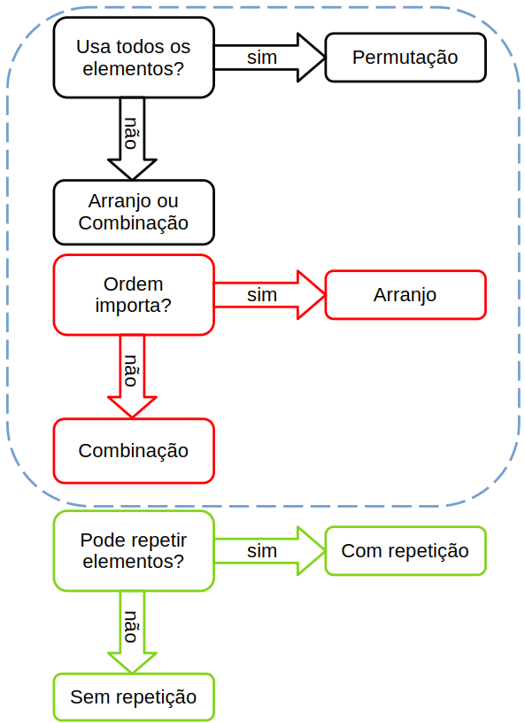

\[ n! = n \times (n-1) \times (n-2) \times \cdots \times 1 \]
Multiplica um número por todos seus antecessores até 1. É a base para todas as outras fórmulas. Por definição, \(0! = 1\).
\[ 5! = 5 \times 4 \times 3 \times 2 \times 1 = 120 \]
Calcule o valor de \(7!\) e \(4!\).
\[ \text{Total} = m_1 \times m_2 \times m_3 \times \cdots \]
Se uma decisão tem etapas independentes, multiplica-se as possibilidades de cada etapa. Usado em situações com "e" (faço isso e depois aquilo).
Uma loja vende 4 modelos de camisa e 3 modelos de calça. Quantos looks diferentes podem ser formados?
\[ 4 \times 3 = 12 \text{ looks diferentes} \]
Um restaurante oferece 5 tipos de entrada, 8 pratos principais e 4 sobremesas. Quantos menus completos (entrada + principal + sobremesa) são possíveis?
\[ P_n = n! \]
Número de maneiras de ordenar todos os elementos distintos. Usa todos os elementos disponíveis.
De quantas maneiras 5 pessoas podem se sentar em 5 cadeiras em fila?
\[ P_5 = 5! = 5 \times 4 \times 3 \times 2 \times 1 = 120 \text{ maneiras} \]
Quantos anagramas (permutações das letras) podemos formar com a palavra "LIVRO"?
\[ P_n^{a,b,c} = \frac{n!}{a! \cdot b! \cdot c!} \]
Ordenação de elementos quando existem itens repetidos. Divide pelo fatorial das repetições.
Quantos anagramas tem a palavra "BANANA" (6 letras: 3 A's, 2 N's)?
\[ P_6^{3,2} = \frac{6!}{3! \times 2!} = \frac{720}{6 \times 2} = \frac{720}{12} = 60 \text{ anagramas} \]
Quantos anagramas tem a palavra "MATEMÁTICA"? Considere: M=2, A=3, T=2, E=1, I=1, C=1 (total 10 letras).
\[ A_{n,p} = \frac{n!}{(n-p)!} \]
Escolher e ordenar p elementos entre n disponíveis. A ordem importa e você usa apenas parte dos elementos.
Quantas senhas de 3 dígitos distintos podemos formar com os números de 0 a 9?
\[ A_{10,3} = \frac{10!}{(10-3)!} = \frac{10!}{7!} = 10 \times 9 \times 8 = 720 \text{ senhas} \]
Em uma corrida com 8 corredores, de quantas maneiras diferentes podemos formar o pódio (1º, 2º e 3º lugares)?
\[ AR_{n,p} = n^p \]
Escolher e ordenar p elementos entre n, podendo repetir elementos. A ordem importa e repetições são permitidas.
Quantas senhas de 3 dígitos podemos formar com os números de 0 a 9, podendo repetir dígitos?
\[ AR_{10,3} = 10^3 = 1000 \text{ senhas} \]
Uma placa de carro antiga tinha 2 letras (26 possíveis) e 4 números (0 a 9), podendo repetir. Quantas placas eram possíveis?
\[ C_{n,p} = \frac{n!}{p!(n-p)!} = {n \choose p} \]
Escolher p elementos entre n, sem considerar ordem. A ordem não importa e os elementos são distintos.
Escolher 2 sólidos entre 4 opções (pão, margarina, queijo, bolo):
\[ C_{4,2} = \frac{4!}{2! \times 2!} = \frac{24}{4} = 6 \text{ combinações} \]
Quantas comissões de 3 pessoas podem ser formadas a partir de um grupo de 10 pessoas?
\[ CR_{n,p} = C_{n+p-1,p} = \frac{(n+p-1)!}{p!(n-1)!} \]
Escolher p elementos entre n, podendo repetir, onde a ordem não importa. Usado quando repetições são permitidas.
Escolher 3 bolas de sorvete entre 4 sabores (chocolate, morango, creme, baunilha), podendo repetir sabores:
\[ CR_{4,3} = C_{4+3-1,3} = C_{6,3} = \frac{6!}{3! \times 3!} = \frac{720}{36} = 20 \text{ combinações} \]
Uma lanchonete vende 5 tipos de frutas. De quantas maneiras você pode escolher 4 frutas para fazer um suco, podendo repetir frutas?

\(7! = 5040\) e \(4! = 24\)
\(5 \times 8 \times 4 = 160\) menus
\(P_5 = 5! = 120\) anagramas
\(P_{10}^{3,2,2} = \frac{10!}{3! \times 2! \times 2!} = \frac{3628800}{24} = 151200\) anagramas
\(A_{8,3} = 8 \times 7 \times 6 = 336\) pódios
\(26^2 \times 10^4 = 676 \times 10000 = 6.760.000\) placas
\(C_{10,3} = \frac{10!}{3! \times 7!} = \frac{3628800}{30240} = 120\) comissões
\(CR_{5,4} = C_{5+4-1,4} = C_{8,4} = \frac{8!}{4! \times 4!} = 70\) maneiras
Como citar essa página:
FUMACHI, E. F. . Disponível em: . Acesso em: .